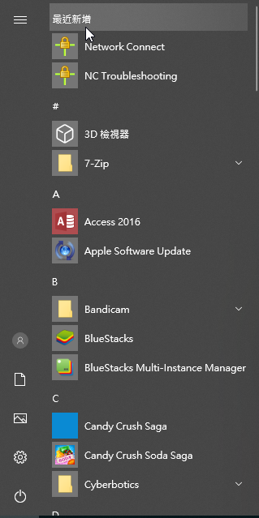
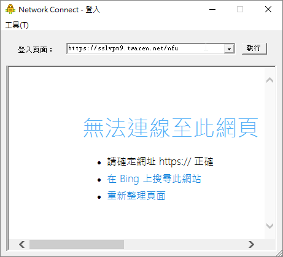
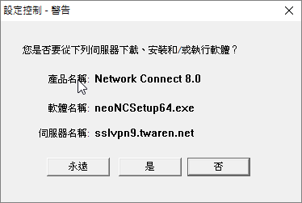
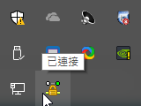
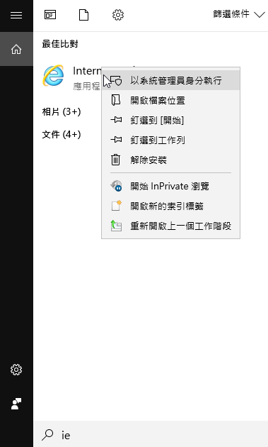
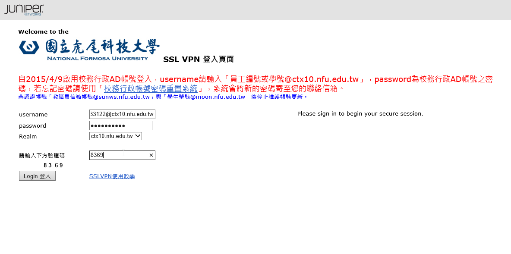
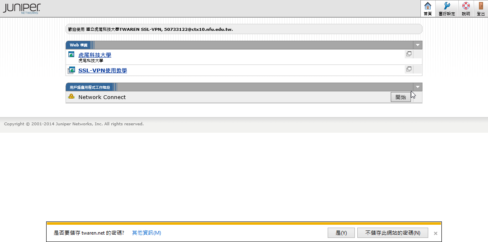
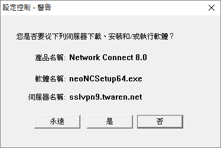
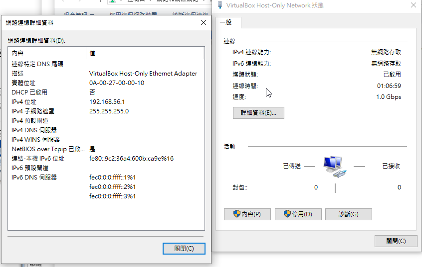

2.執行程式後，於"登入頁面"輸入網址 : https://sslvpn9.twaren.net/nfu ，後按下"執行"


5.螢幕右下角顯示"已連接"，表示已成功連線。

1.請在IE瀏覽器上按下右鍵 使用"以系統管理員身分執行"登入頁面請輸入： https://sslvpn9.twaren.net/nfu，按下「執行」，會出現帳號與密碼登入欄位。
請填入虎尾科技大學的校務行政AD帳號及密碼，並請輸入下方驗證碼，進行身份確認。
請完整填寫您在虎尾科技大學的校務行政AD帳號以及密碼，否則國網中心找不到對象進行身份確認！(例: 員工編號或學號@ctx10.nfu.edu.tw）
填寫完畢以後按下Login登入就會開始進行身份確認，請稍後一段時間。2.點選「開始」3.點選「是」，SSL VPN程式安裝完畢後，就會開始跟你的電腦建立連線，請稍後一段時間。5. VPN連線建立完成連線建立完成後，在電腦的工作列上(桌面右下角)，會出現 Juniper Network Connect VPN Client的圖示，表示VPN連線已經成功的建立在你的電腦上了。點擊圖示兩下，即可查看連線資訊。(註:指派IP:一定為120.113.100.XX)。
到此，您的SSL-VPN連線已經成功的建立，不管是在家裡還是出差，您的電腦就像在學校使用一般，您可以自由的使用虎尾科技大學自己擁有的網路資源。6. 連線IP檢視(*)如何得知連線的 IP 究竟是什麼呢？您可透過網際網路上提供 IP 位址偵測服務的網站進行確認，例如 http://showip.net/